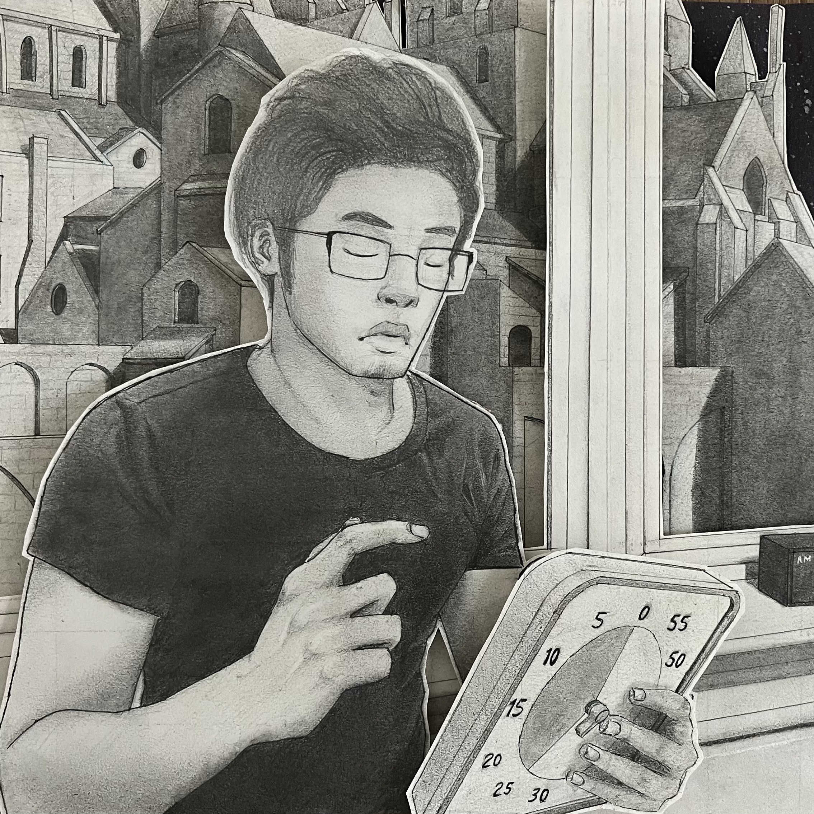
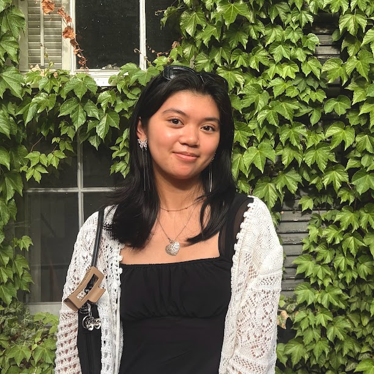

Who makes the collective
A growing interdisciplinary community exploring how data can
become
more accessible, expressive, and meaningful in everyday life.
Principal Investigator
Visualization, cognitive accessibility, storytelling, and
arts-informed approaches.
+ more
Keke is an Assistant Professor and director of the
collective. She studies how visualization can expand the
ways people engage with data, with a focus on cognitive
accessibility, storytelling, participatory design, and
arts-informed approaches.
Graduate Researcher
UX/UI, visual design, data visualization, accessibility, and
game design.
+ more
Nony is an international graduate student from Bangladesh
currently studying HCI at UMD. He has 4+ years of
experience in UX/UI and 10+ years in visual design. His
research interests include data visualization,
accessibility and game design.

Undergraduate Researcher
Visual design, animation, programming, accessibility, mental
health, and game design.
+ more
Diego is a Computer Science major interested in exploring
the intersection between technology, design, and
storytelling. He is passionate about investigating how
this intersection can be used to promote accessibility and
good mental health.

Undergraduate Researcher
UI, UX, inclusive design, digital accessibility, and mental
health technology.
+ more
Isabella is an Information Design and Psychology double
major with interests in UI, UX, inclusive design, and
digital accessibility. She is interested in investigating
the ways technology can increase access to mental health
services and improve psychological well-being.
Research Collaborator
Visualization, graphical perception, accessible and
exploratory data analysis.
+ more
Arran is a Ph.D. student in Computer Science at UNC Chapel
Hill. He studies how people understand data in order to
build accessible, intelligent and empirically grounded
tools for exploratory analysis and decision-making.